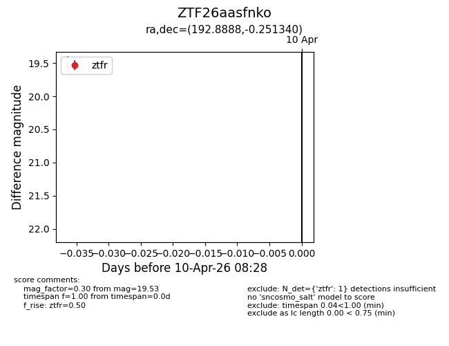
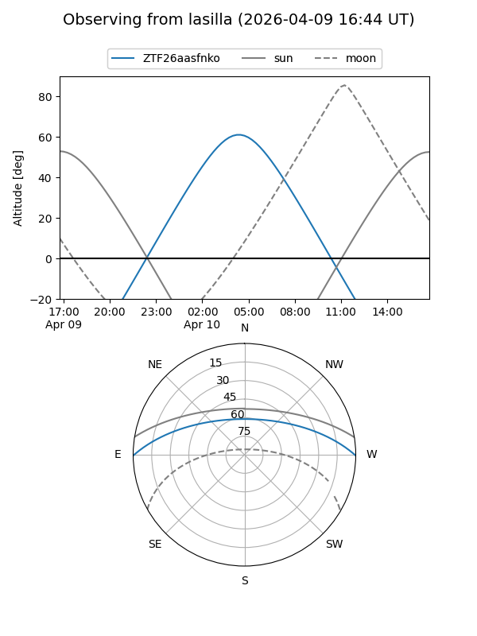
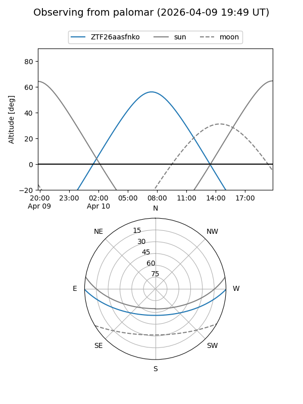

ZTF26aasfnko
Target ZTF26aasfnko at 2026-04-10 08:35
Aliases and brokers:
FINK: link
Lasair: link
ALeRCE: link
alt names
ZTF26aasfnko (ztf,fink_ztf)
Coordinates:
equatorial (ra, dec) = 192.8888,-0.25134
equatorial (HMS+DMS) = 12:51:33.32,-00:15:04.82
galactic (l, b) = (302.9958,+62.62039)
Flags:
Photometry:
last ztfr=19.53
1 ztfr detections
Lightcurve

Visibility


Additional plots